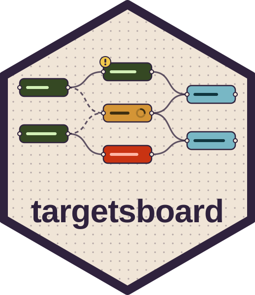

A live board for the author of a targets pipeline: its structure, what is outdated, what each target produced and what a run is doing. It replaces targets::tar_watch(), in a background process, so your R session stays free.
install.packages("targetsboard")remotes::install_github("Athospd/targetsboard")library(targetsboard) app <- tar_board() # opens in your browser targets::tar_make() # the board follows along app$is_alive() browseURL(attr(app, "url")) # reopen a closed tab readLines(app$get_output_file()) # its log app$kill() # or the ⏻ button
Like tar_watch(), it reads the project's script and store (_targets.R, _targets/, or what _targets.yaml says), serves on a random free port and waits until the board is up.
| script = | the targets script to draw |
| scripts = | other scripts offered in the Script field |
| project = | a _targets.yaml project (default TAR_PROJECT) |
| targets_only = | FALSE also draws functions and globals |
| port =, host = | default shiny.port, 127.0.0.1 |
| browse = FALSE | don't open the browser |
| ... | to tar_visnetwork(): names, allow, exclude |
shiny::runApp(tar_board_app(script = "_targets.R"))
tar_board()| targetsboard.theme | start on a theme, e.g. "Cosmo", "Nord" |
| targetsboard.preview_bytes | values larger than this (100 MB) load only when asked |
| targetsboard.confirm_nodes | ask before drawing more targets than this (500); Inf never asks |
| shiny.port, shiny.host | where the board listens |
_targets/user/. Minimap, zoom and ⤓ PNG at the corners.
3Tidy vertically Tidy horizontally lay it out afresh.
4Value preview: opens on a double-click; a problem comes first.
An icon in the corner tells the kind: pattern, file, Quarto / R Markdown report, function, object.
| click | focus: highlight what it depends on and what depends on it |
| double-click | open its value (or its problem) |
| right-click | menu: Run, Invalidate, Show its value, Copy its name, Select upstream / downstream / lineage |
| Ctrl-click | add to the selection (Cmd on a Mac) |
| Shift-drag | select a box of targets |
| Esc, background | clear focus and selection |
The toolbar over a focused target: Run Invalidate Value Copy. A selected group gets Run {n} Invalidate {n}.
tar_make() in a background process; it goes on if the board stopstar_invalidate() everything (asks first)The run summary under the buttons counts built, skipped, running, errored and to-go targets, with a clock and the time left. Runs from the console show too.
| Board | the DAG |
| Problems | every target that errored or warned |
| Log | the latest run's output |
| Script | the loaded script, and where the store, metadata and workspaces are, each path a click to copy |
| tar_visnetwork() | targets' own graph |
| Metadata | tar_meta(), slowest first |
The top bar picks the project, the script (type to filter, Enter loads) and the theme. ⟳ Refresh re-reads it all.
Find why a target fails, look inside any value, and put the board's DAG in your own Shiny app.
Its preview opens on the problem: the error or warnings, the traceback through your own functions, its seed and inputs (links), and code to copy:
targets::tar_workspace(check) # inputs, globals, seed { # its command stop_if_missing(clean) }
Workspaces exist when the pipeline saves them: tar_option_set(workspace_on_error = TRUE), or switch on Stop at warnings for a warning.
targets::tar_make(
names = "check",
script = debug_run_script("check"),
callr_function = NULL,
use_crew = FALSE, as_job = FALSE
)
debug_run_script(name) writes a script that loads yours and, for this run only, stops in the debugger inside name and skips the rest; yours is untouched. Restart R first.
Hover an outdated target, or open its value: its reasons sit above it, from tar_sitrep() cues with what changed named from tar_network():
f changed (a function or global)tar_visnetwork() hashes the whole pipeline: slow on big ones. Push only the statuses instead; the widget updates them in place.
p <- targets::tar_progress() update_targetsboard_status(session, "dag", setNames(p$progress, p$name))
A frame per value: a header with its class, shape, size in the store, format and build time, a button that copies its tar_read() call, and a tab per view. The last tab, Printed, is what print() shows. ⛶ opens it full screen.
| data frame | Rows: 1,000 rows, searchable, sortable, a histogram per column; Columns: type, missing, unique, summary |
| vector | summary and distribution, or value counts |
| ggplot, plot | drawn at the preview's size |
| list | its items, two levels deep |
| model | estimates and fit (broom), or summary() |
| pattern | pick a branch, or all combined |
| file target | each path in a section: images, PDF, HTML, CSV/TSV as tables, Markdown, text and R code in colour |
| report | tar_render() / tar_quarto(): the rendered document |
Values over targetsboard.preview_bytes wait for Load the value.
tar_board_preview(x, target, ...) is an S3 generic: a method returns a view, or a named list of views shown as tabs. A view is HTML (a tag, a tag list, an htmlwidget) or a plot wrapped in tar_board_preview_plot().
# _targetsboard.R, beside _targets.R
tar_board_preview.boot_summary <-
function(x, target, ...) {
list(
Estimates = htmltools::tags$pre(
format(x$estimates)),
Draws = tar_board_preview_plot(
function() hist(x$draws))
)
}
_targetsboard.R (only that file) at start and on ⟳ Refresh.@exportS3Method targetsboard::tar_board_preview.tar_board_file_parquet adds a file type.library(shiny); library(targetsboard)
net <- targets::tar_visnetwork(
targets_only = TRUE)$x
ui <- fluidPage(targetsboard("dag",
net$nodes, net$edges, height = "600px",
options = targetsboard_options(
node_actions = c(run = "Run it"))))
server <- function(input, output, session) {
observe(print(input$dag_focused_node))
}
shinyApp(ui, server)
| update_targetsboard() | a whole new graph; targets keep their place |
| update_targetsboard_status() | only statuses (light: for a run), warnings, branch counts, hover text, kinds |
| update_targetsboard_options() | some options, e.g. color_mode |
| update_targetsboard_focus() | focus a target |
| update_targetsboard_selection() | select targets |
| targetsboard_fit_view() | bring targets into view |
| targetsboard_export_image() | ask for a PNG/SVG, then save_targetsboard_image(input$dag_image, path) |
input$dag_*focused_node · selected_nodes · running_nodes · double_clicked_node · context_node · node_action (action, node, nodes) · viewport · layout (give it back as layout =) · image
targetsboard_options()color_mode light / dark / system · minimap · controls · legend · background · edge_type · only_render_visible · node_actions, toolbar_actions and their _group_ versions · download_image
?tar_board · ?tar_board_preview · ?targetsboard
Updated 2026-11 · targetsboard 0.3.0